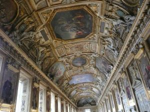
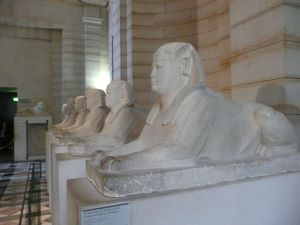
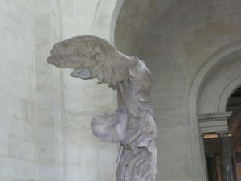
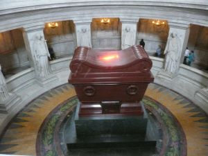
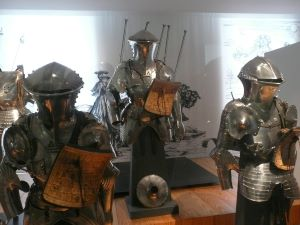
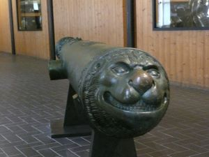

The Louvre is an art
museum that holds unique art, including the art from Napoleon Bonaparte's
military conquests. The museum has four floors of artwork from different
time periods and cultures up to 1848.

One of the hallways in the Louvre.
Reasons to Visit the Louvre
A visit to the apartments of Napoleon III is included in the museum
admission.
The Louvre has an extensive collection of Egyptian and Islamic art.

A row of sphinxes.
There are also many ancient Greek and Roman sculptures.
The Louvre includes famous artworks such as Winged Victory of
Samothrace, the Venus de Milo, and Mona Lisa.
Tips for visiting the Louvre
Navigating through the Louvre is difficult, so make sure to get a
map online or inside the museum.
Use the color code and room number markings on the map, along with
familiar artwork, to navigate the museum.
Enter the museum in the underground mall called Carrousel du Louvre to
get through the museum admission line quicker.
Winged Victory of Samothrace is on a staircase near the Greek and Roman
section of the Louvre.

Winged Victory of Samothrace.
Plan to arrive at the Louvre before it opens in order to see the most
famous artwork first before the lines get overcrowded.
The museum remains open later on Wednesdays and Fridays.
Be careful when around large crowds in the Louvre since pickpocketing
can occur there. The pickpockets are frequently children.
The Army Museum
The army museum in Paris, also known as
Musée de
l'Armée Invalides holds France's artifacts of war. Admission also includes a visit to
the tomb of Emperor Napoleon I.

Napoleon Bonaparte's tomb.
Reasons to Visit
The museum has an extensive collection of armor, as well as artifacts from both
world wars.

Medieval armor.
The army museum also has a cathedral, antique weapons, and artifacts from
Charles de Gaulle.
Don't forget to visit the extensive collection of medieval armor.
Tips for visiting the Army Museum
Check the website for the dates of temporary exhibitions.
The museum is open an extra four hours on the first Friday of the month.
Visitors are permitted to view formal reception ceremonies in the courtyard
when visiting dignitaries are welcomed to France.
The main entrance of the army museum is identified by the cannons in the front. There are also many
unique cannons inside the museum.

Cannon with a lion's face.
The army museum is across from the Varenne
Metro Line 13 stop.